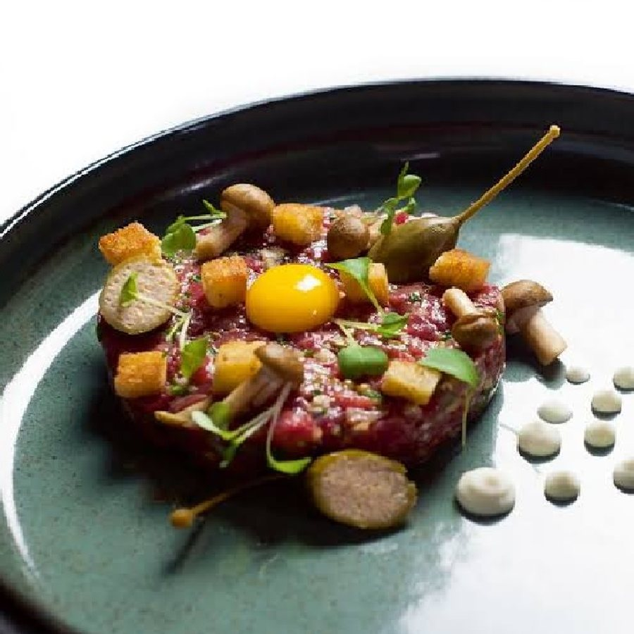

Sami's Restaurant
Tatar z polędwicy wołowej
(kapary, żółtko przepiórcze, borowik, pikle)

60 zł
ul. Piotrkowska 12
VIP Menu
Polska
Polska
W tym mieście nie ma jeszcze restauracji
Pierwszą dodasz w panelu sterowania.
(kapary, żółtko przepiórcze, borowik, pikle)

ul. Piotrkowska 12
Pierwszą dodasz w panelu sterowania.
Na telefonie przesuń zdjęcie w bok, żeby zobaczyć kolejne danie, albo w górę, żeby przejść do następnej restauracji. Na komputerze działają strzałki na klawiaturze.